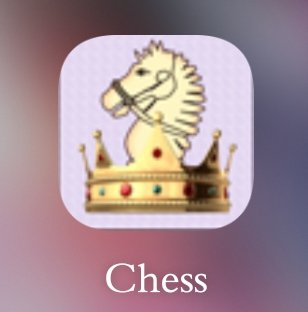
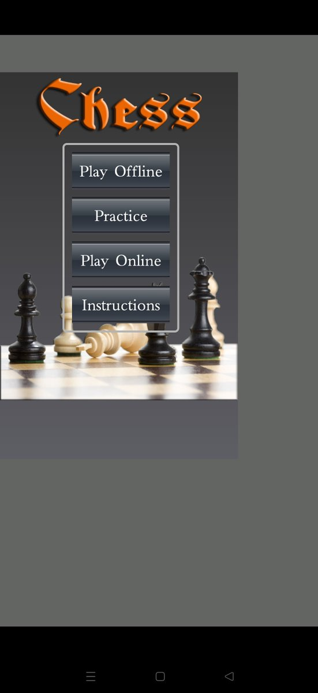
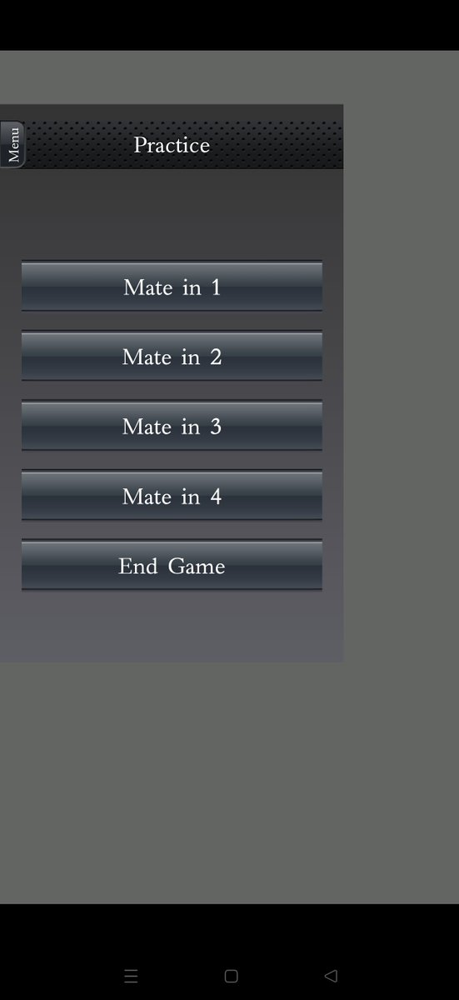
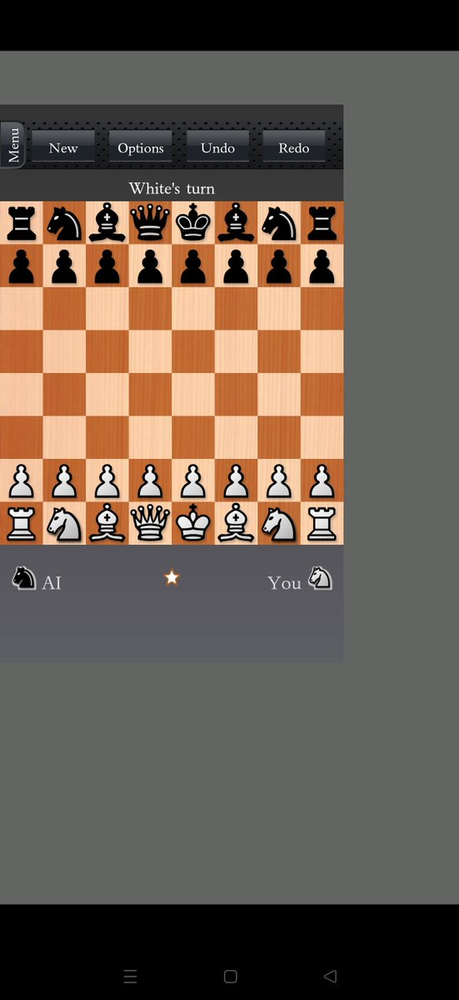

在2015年到2016年间，因为初中班上流行下棋，我就下载过一个国际象棋APP。
这个APP里面有很多残局，也可以联网和真人对弈。所幸因为实在很喜欢，留了个心眼，把安装包保存在了网盘等云端，就一直没丢（因为后来在网上找就再也找不到了）。
后来，大概在2017后面那两三年里，我突然发现联机功能连接不到服务器了。说明一下，这个APP设计很简单，没有账号密码。证明某个云端账户是“我”的唯一方式，就是要保存它给你的ELO码，然后在换设备时输入，也只有它可以在任何设备互通。
此外还有一个问题，就是这十年里安卓版本升级了，这个软件是32-bit的，而现在的安卓更兼容64-bit的。虽然拿安装包下载后还是可以正常使用，但是它无法完整占据全屏了。
全世界都没有多少人拥有这个APP了，而我把这份早期安卓的数字遗产保留下来了，也算是一种幸运吧？
这个APP里面有很多残局，也可以联网和真人对弈。所幸因为实在很喜欢，留了个心眼，把安装包保存在了网盘等云端，就一直没丢（因为后来在网上找就再也找不到了）。
后来，大概在2017后面那两三年里，我突然发现联机功能连接不到服务器了。说明一下，这个APP设计很简单，没有账号密码。证明某个云端账户是“我”的唯一方式，就是要保存它给你的ELO码，然后在换设备时输入，也只有它可以在任何设备互通。
此外还有一个问题，就是这十年里安卓版本升级了，这个软件是32-bit的，而现在的安卓更兼容64-bit的。虽然拿安装包下载后还是可以正常使用，但是它无法完整占据全屏了。
全世界都没有多少人拥有这个APP了，而我把这份早期安卓的数字遗产保留下来了，也算是一种幸运吧？



